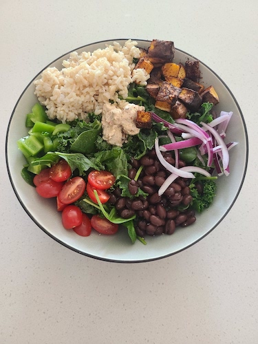

Butternut Squash and Black Bean Bowls

Butternut Squash and Black Bean Bowls
Spiced butternut squash, black beans, and kale come together to create a healthy and filling vegetarian lunch or dinner that is perfect for meal prep.
4 Servings
Ingredients
For the Kale:
- 2 cups de-stemmed and chopped kale
s
- 2 teaspoons extra-virgin olive oil
- 1/8 teaspoon kosher salt
For the Roasted Butternut Squash
- 28 oz peeled and cubed butternut squash
- 2 tablesppons extra-virgin olive oli
- 1 teaspoon kosher salt
- 1 teaspoon chili powder
- 1 teaspoon chipotle powder
- 1 teaspoon ground cumin
- 1/2 teaspoon ground corianger
- 1/2 teaspoon garlic powder
For the Creamy Chipotle Sauce
- 1 cup plain 0% Greek yogurt
- 1 chipotle pepper in adobo sauce
- 2 tablespoons lime juice
- 1 clove garlic, peeled
- Kosher salt
For the Bowls
- 1 15-ounce can black beans, drained and rinsed
- 2 cups cooked brown rice
- 1 cup sliced red onion
- 1 cup cherry tomatoes, halved
- 1 cup diced green bell pepper
Steps
Prepare the kale:
- Place the kale, olive oil, and salt in a bowl. Massage the kale for 1 minute. It will shrink in volume.
- Let sit at room temperature while making the rest.
Prepare the butternut squash:
- Preheat the oven to 400°F with a rack placed in the center of the oven.
- In a large bowl, toss the butternut squash with 2 tablespoons of the olive oil.
- In a small bowl, mix together the salt, chili powder, chipotle powder, cumin, coriander, and garlic powder.
- Sprinkle the spice blend onto the buttternut squash and toss to evenly coat.
- Scatter the butternut on a sheet pan and roast for 25 to 30 minutes, flipping once halfway through, until browned and fork-tender.
Make the creamy chipotle sauce:
- Place the yogurt, chipotle pepper, lime juice, garlic cloves, and a pinch of salt in a blender or small food processor. Blend or process until smooth.
- Season to taste with salt. Set aside until ready to assemble the bowls, or store in the refrigerator.
Assemble the bowls:
- Fill serving bowls with the kale, roasted butternut squash, black beans, brown rice, cherry tomatoes, and bell peppers.
- Garnish with the red onions and creamy chipotle sauce.